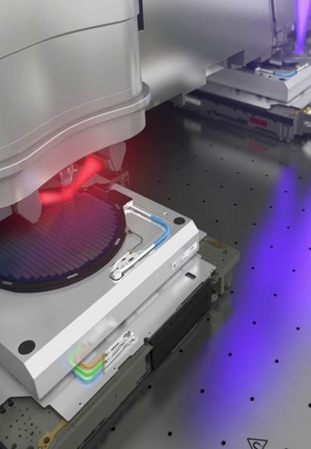
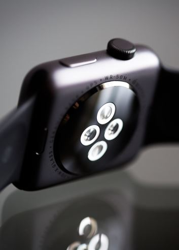

Projects



Prototyping Health Devices
Designed and prototyped a device to measure health of aquatic mammals. The device took three axis accelerometer and gyroscope measurements and transmitted them to an exterior device. Data was then processed to determine trends seen and relate them to average force and jerk for certain behaviors.